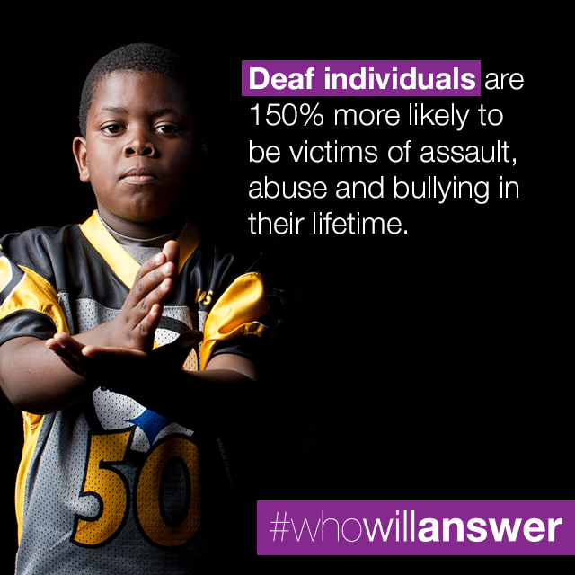
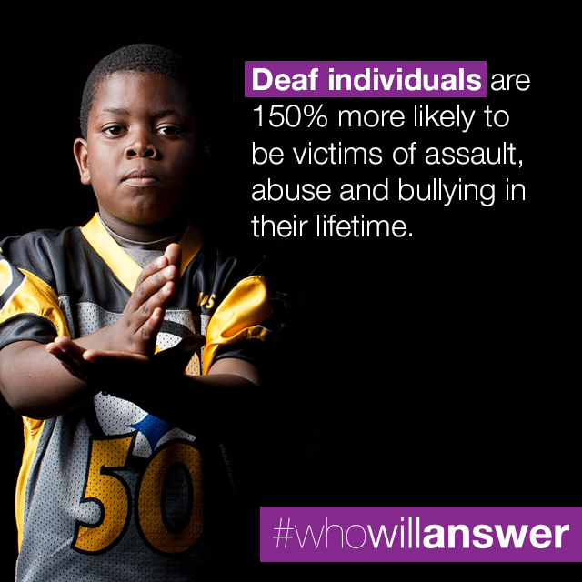
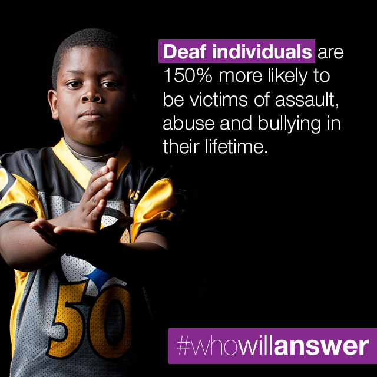

Imagine
Imagine living in a country where you do not speak the common language, but still call it home. Imagine reaching out for help, only to find yourself conversing with someone who does not understand you. Imagine feeling alone, hopeless, or concerned with no one there to talk to you directly. Imagine the people and the government of your country do nothing to help.
The Struggle
For many deaf, hard of hearing, and deaf-blind individuals in the U.S., the scenario described above is all too familiar. As members of communities that use American Sign Language (ASL) to communicate, they often experience a lack of accessible advocacy services. In cases of domestic violence or sexual assault, the general public, or hearing people as they are referred to in deaf communities, can call the National Hotline 24/7. For those that use ASL to communicate, however, there are only deaf staff members available Monday through Friday, 9am to 5pm. These deaf staff members are able to communicate directly in ASL with victims, or victims’ friends/family. Why, then, is there no funding to make them available 24/7? Inequality in the eyes of the general public has long since been a struggle that the deaf, hard of hearing, and deaf-blind individuals experience.
Supporting the Cause
As members of communities at higher risks of experiencing domestic violence or sexual assault, having access to a 24/7 Deaf Hotline saves lives. With roots in the deaf community and the power of an international multi-million dollar organization, Communication Service for the Deaf (CSD) is perfectly positioned to support the need for such a hotline. Violence is not limited to business hours. For those calling after hours, who will answer?
#WWA
In November of 2014, CSD launched the Who Will Answer campaign via the CSD Unites program. Graphics, as you can see above and below, as well as videos embedded throughout this site, were designed by CSD Creative with heart-wrenching statistics to convey the severity of the situation. All graphics involve purple, the international color symbolic of domestic violence. Additionally, a petition was developed on change.org to gather the attention of legislators and people in a position to bring about change. It also served as a means of raising awareness of the issue and asking people to support the cause. Instead of waiting for results in the form of a grant, CSD Unites, with the help of CSD Creative, developed a crowdfunding platform to fund a 24/7 Deaf Hotline.
Getting Involved
CSD involved numerous deaf-focused organizations to lead the charge, working with anti-violence organizations such as Abused Deaf Women’s Advocacy Services (ADWAS). By creating a website and hosting events that were attended by well-known influencers in the deaf community, such as Marlee Matlin and Sean Berdy, much attention was drawn to the campaign. By posting pictures to various social media channels, 785,000 people were reached. By using consistent branding with the hashtags #WWA and #WhoWillAnswer, the audience became engaged and started a dialogue about the issues, spreading awareness not only within the deaf, deaf-blind, and hard of hearing communities, but also within the general public.
Connecting People
People, hearing and deaf alike, signed the petition. They saw the plea to ensure deaf survivors had someone to turn to, and that their calls would be answered. Who Will Answer, of course, has another meaning. It evokes a desire in people to answer the call themselves by signing the petition and spreading the word. They may not have the training necessary to help, or may not even know ASL, but by showing that people from all walks of life experience tragedy, no matter their culture or method of communication, they start to feel connected. To know that everyone is subject to the shortcomings of human nature, people stand up and show support.
Sign the Petition Because...
“Everyone should have immediate access to emergency help in these situations.”
SUE ERDMAN
“I'm signing because everyone deserves help no matter the hour.”
SHANNON ROSS
“Deaf people are people too.”
MARCUS WELLS
“Everyone needs a voice. Everyone who reaches out for help deserves to have someone reach back.”
SUSAN POTTER
Now Imagine There is Someone You Can Call
The petition was signed by 3,500 individuals, with $25,000 raised through crowdfunding. As of March 20, 2017, there is a 24/7 National Deaf Hotline provided by ADWAS! Individuals that use ASL to communicate can call any time, any day and talk to someone directly. They no longer have to communicate via an interpreted call after business hours. The funding that ADWAS received, however, is in the form of a three-year, $250,000 grant. Though the fight for equality is far from over, and there is no end in sight for violence, providing a platform to raise awareness of critical issues in the deaf community is how CSD Creative and CSD Unites answered the call. Imagine how much better the world would be if all organizations with power in any market did the same.